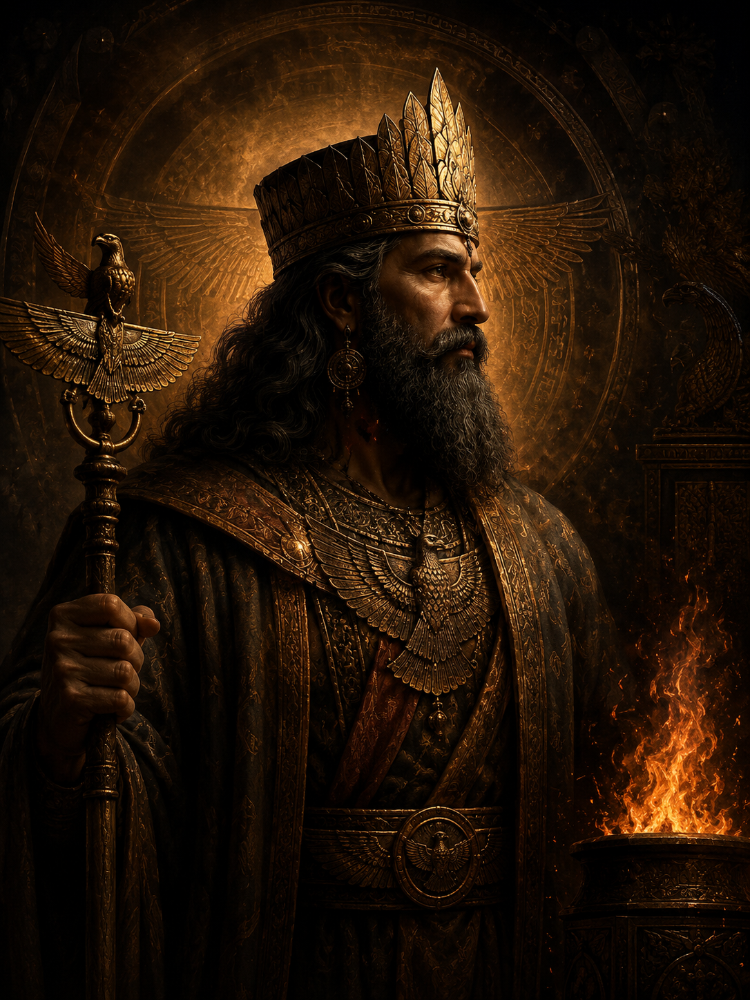

Ahura Mazda
اهورامزدا. آفریننده و خیر مطلق
Supreme Creator GodThe uncreated, self-sustaining Lord of Wisdom who existed before all time. Ahura Mazda is the source of all good in the universe. truth, righteousness, and light. He created the six Amesha Spentas as extensions of his own divine nature, each embodying a sacred principle. He is the cosmic legislator of Asha, the divine order that underpins all reality.